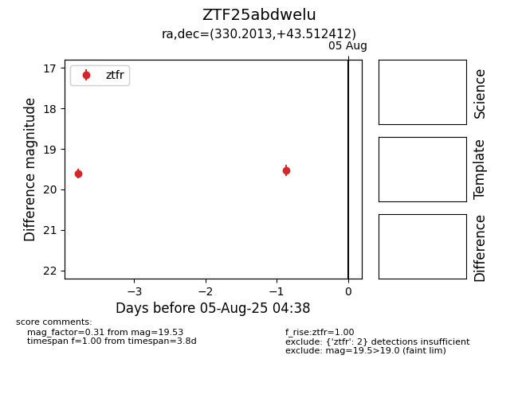

Target ZTF25abdwelu at 2025-08-05 04:38, see:
FINK: fink-portal.org/ZTF25abdwelu
Lasair: lasair-ztf.lsst.ac.uk/objects/ZTF25abdwelu
ALeRCE: alerce.online/object/ZTF25abdwelu
alt names
ZTF25abdwelu (ztf,fink)
coordinates:
equatorial (ra, dec) = (330.2013,+43.51241)
galactic (l, b) = (93.0707,-9.24834)
photometry
last ztfr=19.53
2 ztfr detections
